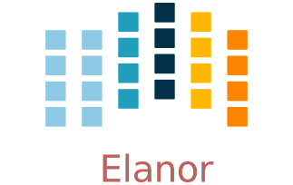

TLDR: I wanted a wireless split keyboard, so I made one. This post outlines the process.

Table of Contents
- Introduction
- Outline
- ESP32
- Matrix scanning
- ESP-Now
- Modifier keys
- Bluetooth
- Keyboard layers
- Rotary encoder
- LED driver: FastLED
- OLED Display
- Deep sleep
- Battery control
- PCB layout design
- Case design
- Specialized keys
- Replacing esp_now
Introduction
Mechanical keyboards are somewhat of a dated concept that has gathered some speed in more recent years. Back when computers were first coming out for the public, keyboards had mechanical connections that would allow a current to activate a switch. Then as economics got wind, somehow we got used to membrane keyboards; virtually every office in the world has these membrane keyboards. Compared to mechanical keyboards, membrane keyboards feel more “mushy”. In contrast, mechanical keyboards may have different feel based on the springs or whether the key switch has a noticeable “bump”. They can be clicky or not; the possibility are wild now.
A few years ago I started following the subreddit on mechanical keyboards. Back then, the community had little options and cherry still had patents on the switches. Cherry MX keys were virtually found in every commercial keyboard on the market. Now, the landscape has changed quite a bit and more and more different types of switches are available.
Why do I prefer mechanical keyboards? Mechanical keyboards give a “joy” to typing. Membrane keyboards are fine to type on, but they aren’t fun. Generally my fingers get “tired” after typing on membrane keyboards as the keys feel a bit mushy, i.e. you get no relief when pushing down a key and the key press does not feel crisp.
After following / r / mechanicalkeyboards for a while, I decided to build my own keyboard. Within the community, there is a wide variety of switches and shapes of keyboards available. The one I wanted, an orthonormal keyboard, wasn’t commercially available. Plus I liked the idea of building my own keyboard. In my work, the keyboard is my primary tool and why not key a custom version of it for myself. I ended up building 2 handwired versions of 65 percent with 85 switches in a grid layout. In addition, I modded a MagSafe-inspired cable to it which allowed it to be nice and portable. After every build I told myself : “ This is the last one I’ll build”.
Enter this blog, where I again tell myself “this is the last one I build!”. What changed? Since I learned about split-style keyboard, I always wanted one. The keyboards I had made so far weren’t. Split would be completely ergonomical, but unfortunately, none (that I know of) exists that are both (a) wireless and (b) split. As always I aimed to high and wanted to emulate the many features that QMK implements. Most importantly, I wanted to get back into writing more low level languages like c++, and I take this project as a nice opportunity to get into c++ again, and work with micro-controllers.
This post will serve as my log for building the keyboard. The post will updated as I work on it.
Core feature targets
- Split wireless keyboard
- Hot swappable key sockets
- Portable, not a full keyboard
- Battery control
- OLED display
- Rotary encoders
Outline
The keyboard is split; it has two halves. The right and left half will have most of the same “base” functionality. Most importantly, each half needs to scan the matrix to obtain which keys are being pressed. One of the halves will act as a server, the other will act as a client. The server will need the following capabilities
Server abilities
- Read matrix
- Setup a bluetooth connection
- HID Device
- Mouse emulation
- Setup connection with client
- Merge keys pressed and send to bluetooth controller
- Control LEDs on both client and server
Client abilities
- Read matrix
- Find server and send pressed keys to server
Due to the heavier load of the server, I prefer to make the role of who is server and who is client dynamic. That is, with some heuristic (for example deep sleep), the roles may switch to prolong batter life of both units.
To give a course overview consider the following picture:
ESP32
- I opted for a micro-controller as this would allow me to prototype without worrying about my electronic skills. The controller needed to have battery control, bluetooth, and preferable an energy efficient screen; I ended up with an esp32.
The esp32 is a hybrid chip that has both Wi-Fi and bluetooth capabilities. The esp32 consists of different versions that varies in (mainly) in the number of pins, battery connector, and or screen. The version I ended with (LORA-V2) had a battery connector and a tiny OLED screen.
The ecosystem of ESP32 is well-developed albeit less convenient than its arduino counterparts. Luckily, the opensource community has taken it upon themselves to provide lots of arduino bindings to the libraries by espressif (manufacturer of esp32).
Especially important (as it turned out later) is that the esp32 has the capabilities of using both Wi-Fi and bluetooth low energy simultanaously. In addition, through ESP-NOW, different eps32 modules can form a mesh, which I will harness to do server-client communication.
For prototype 1, the following pinout was used
| pin | use |
| 13 | row 2 |
| 12 | row 3 |
| 14 | row 4 |
| 27 | row 5 |
| 26 | column 6 |
| 25 | led input |
| 0 | row 1 |
| 18 | column 1 |
| 23 | column 2 |
| 19 | column 3 |
| 22 | column 4 |
| 21 | column 5 |
| 17 | rotary encoder A |
| 5 | rotary encoder B |
Pin 4 could still be used as a modulated pin for measuring the battery.
Matrix scanning
A keyboard matrix scanning circuit is used to enhance the number of keys, while keeping the number of pins low. A micro-controller uses general pin input/output (GPIO) to register currents. If a singular key switch is wired to a single pin, 96 pins would be needed for a 104 sized keyboard (full-size). This would be unpractical.
As an alternative one could apply matrix scanning. In this method, the keys are wired as a grid where each column connects to each row effectively forming a “switch”. For a total for 100 keys, one would need 10x10 grid. The grid acts as a force multiplier for the number of switches. Instead of needing 100 separate keys, we merely need 10 rows and 10 columns (20 pins) to wire our 100 switch keyboard.
The matrix is repeatedly scanned to determine if a row column form an open circuit. That is, if a key switch is pressed down, current can flow between the row and column. The scanning occurs at a high scan rate, making it seemingly instantaneous.
Ghosting
Matrix scanning forms an excellent idea to efficiently represent our electronic switches. However, merely scanning does not correctly records all key presses. Under some conditions, a matrix can record ghost keys, i.e. keys that are registered but not pressed. This process is called ghosting.
Ghosting occurs when current can freely flow between separate rows or columns due to another row/column being open. For example consider a simple two row, two column keyboard. This board can support 4 keys. When two keys along the diagonal are pressed, we register 4 keys(!). This is obviously wrong and needs to be corrected. The most common approach is to put a diode right after the switch either on the columns or rows, which prevents current from traversing and causing ghosting.
Key debouncing
Key debounce is a mechanism to filter out erroneous key activity. When two metal plates come into contact, the signal does not form a clean square wave. In order to clean up this signal, key debouncing is used to reflect the “press” of key switch. Initially I used a simple time filter, i.e. ensuring that the keyswitch was pressed down between x ms. This ended up being a bit noisy with the switches I was using; I ended up writing a digital filter that worked fairly well.
Changes
- Added matrix class
- added matrix scan
- added key debounce
- added (whole) matrix debounce
- filters out erroneous key presses
ESP-Now
The two halves need to communicate to each other. There is only one half that is connected through bluetooth to another device. We call this the server, and the other the client. Keys pressed on the client needs to be communicated to the server which processes the keys, and sends it over bluetooth. Luckily, ESP-now offers a mesh interface we can utilize for this purpose. This is easier to setup than a bluetooth mesh interface and should be relatively secure for foreign attackers. From the website we read:
ESP-NOW is yet another protocol developed by Espressif, which enables multiple devices to communicate with one another without using Wi-Fi. The protocol is similar to the low-power 2.4GHz wireless connectivity that is often deployed in wireless mouses. So, the pairing between devices is needed prior to their communication. After the pairing is done, the connection is secure and peer-to-peer, with no handshake being required.
Mesh interface class
The mesh class is responsible for:
- Setup / deinit the ESP-now connection
- Holding a buffer that is sent over the ESP-now connection. The buffer holds information that needs to be communicated between each halves.
At the moment of writing, the mesh class holds a static buffer which holds `keyswitch_t`. These are structs containing when the last time the pins were read as active. In addition, it contains information on the source and sinc pins, and column and row indices. These last two are used to index into the final keymap on the server side. This way, no actual key information is send, but the server reads the key from the col and row, then they are combined. This solves the issue of sending ascii shifted codes or media keys.
Changes
- Implemented mesh interface class
- Added server capabilities to join the keys from both half and communicate through bluetooth
Replacing ESP now with BLE mesh
The current consumption of esp now is too high to reliable use on battery. By replacing ESP now with a BLE alternative, the current consumption can be reduced by 50 percent. ESP offers a novel BLE mesh functionality which may serve as a replacement for ESP now.
- What functions does BLE mesh have?
- BLE mesh can send 11 octets (88 bits) of information. This is significantly less than 250 of esp now(!).
Modifier keys
My initial implementation measures the onset of keys. That is, debounce worked by measuring when the “square wave” of the key was pressed. This allows for fast and accurate detection detecting key press down. Initially my intentions was to merge the other keys together such that multiple keys are registered at the same time. For example, the shift key needs to register two keys at minimum to shift the ascii code around for let’s say `a` to `A`.
Consequently, I need to both register the key press down as well as the key release; I modified the debounce mechanism to also detect the key release.
Changes
- Change key detection. Register key press and key release
- Mesh buffer management is moved out of the keyboard class.
- Fixed wrong indexing in reading the active keys on the server.
Bluetooth
Bluetooth is rather complicated. The Bluetooth Keyboard class takes care of most of the heavy lifting. Key codes have an associated ascii code, these are put into an ascii code map. Note that the over bluetooth (for whatever reason) these keycodes are remapped to different numbers.
Changes
- Expand this section with info on characteristics and services.
- Figure out how the key codes are organized The symbols are organized in a 128 ascii keymap containing the hex codes to a symbol. Hex codes can be send directly in addition to normal strings over bluetooth. The modifier keys in combination with some media control keys are defined in “BleKeyboard.h”, the ascii map is in “BleKeyboard.cpp”. I have written a short wrapper in “key_defintions.hpp”.
- Add functions for interfacing with bluetooth to the
keyboard class
- Pressing down keys
- Releasing keys
- Convert config class to static class
- [-] Write layer keymap for keyboard
- Wrote qwerty base layer
- Add fixed array check to the layers (add to constant config class steps)
Keyboard layers
A layer is implemented as a 2D vector for the moment, but will likely change in finalizing the keyboard. An active layer is set as a pointer to the current active layer. Each keyswitch has information on where in the grid they fit; keys are read by using these indices in the 2D vector. I did consider an unordered_map use the keyswitch directly as an indicator. This could then be combined with pointers to make a layer dynamic, i.e. instead of having the concept of layers, each key has a different layer that can be accessed. This adds some complexity and I decided against this. The main reason is that the client side would then need to store information on what each keyswitch points to. This would increase communication between each halves if modifiers are used for example. I am afraid that this added communication is not as trivially solved, i.e. one needs to send modifier key across ESP-NOW and then shift all affected keys and when activated send this information back. The ESP-NOW channel is not designed for high information throughput.
The keyboard is not going to be full size. That is, purely based on the number of keys, this keyboard will not be able to have a 1-to-1 mapping from symbol to keyswitch. Luckily, we can greatly increase the number of symbols on the keyboard by hosting the missing symbols on different layers. This means we have to implement a feature that allows one to switch between different layers. For example we may implement a layer up and layer down key, or allow to switch directly between different layers. In QMK is worked out by an `enum struct`. Layers are stacked on top of each other. This has the added feature of allowing a “transparent” key to access on a layer below. I wish to emulate this feature.
I currently host my key layer as a 2d vector. In finalizing my build this may change to a fixed array size. As vectors can be arbitrary sized, I need to add a check to the vectors to not allow uses to define oddly sized arrays (which would lead to seg faults). This will be added to the finalized checks.
In QMK layers are `enum` type, which means the layers are number and tracked through an int. Here, I will have an `active_layer` which points to the `layer_t` hosting the current active keys. With transparent keys I can imagine that this approach will not work.
Changes
- Implement key layers
- KC_TRANS accesses key below the current layer
- This effect may stack until a non-transparent key is found
- Layer switch keys
- Up and down
- Hold layer switch key: similar to modifier keys, these keys temporarily shift the key layer while holding down this key.
- KC_TRANS accesses key below the current layer
Rotary encoder
The keyboard has two rotary encoder (one on each halves). The encoders I added were mostly as a gimmick, but can be used as slider controls for volume control and or scrolling.
The rotary encoder has two pins that are shifted 90 degrees out of phase (see figure fig:encoder). Each click produces a quadrature signal that is fixed. Unknowingly I bought encoders that are extremely noisy (KY-040). When the encoder clicks, contacts are moved across a terminal. The signal produced are ideally two square offsets by 90 degrees. In practice however, the signal debounces and produces more signal. They are three traditional ways of taming noisy signals
- Hardware filtering
- Digital filtering
- Decoding
I don’t know much about the first method or last method. I initially tried method 2, i.e. measuring the pins, waiting for some time and measure again. This however did not correctly measure the rotations. I tried multiple libraries that used interrupt routines that did not end up correctly measuring the clicks of the encoder. Finally I found this blog post which highlighted exactly the problem with the KY-040. The decoder method worked like a charm, but took some time to figure out. Below is the exploration I had trying to figure out how this code worked.
Taming the KY-040 with decoding
The quadrature signal per click produces a fixed output for either clockwise or anti-clockwise rotation. The encoder can be thought of as a fixed state machine that moves between different states (<table_transition>).
| Current state | New state | Direction | ||
|---|---|---|---|---|
| A pin | B pin | A pin | B pin | |
| 1 | 1 | 0 | 1 | clockwise |
| 0 | 1 | 0 | 0 | clockwise |
| 0 | 0 | 1 | 0 | clockwise |
| 1 | 0 | 1 | 1 | clockwise |
| 1 | 1 | 1 | 0 | anti-clockwise |
| 0 | 1 | 1 | 1 | anti-clockwise |
| 0 | 0 | 0 | 1 | anti-clockwise |
| 1 | 0 | 0 | 0 | anti-clockwise |
In practice however, a noisy rotary encoder will also output some state transitions that are not allowed, e.g. 11->00. In order to correctly read which direction the rotary encoder was turned in, a digital filter can be used. A simple filter would be something like
$$ signal = (signal « 1) | digitalRead(A_{pin}) | 0xF000$$
A signal is only read if the integer value reaches the all ones state, then resets and waits again. Trying this method did not end well for me. I ended up using sequence decoder; the pattern are listed in <encoder_scheme>.
We can group the current state and new state as a 4 bit number, i.e. $\{a, b, a’, b’\}$ where $a$, $b$ are the current state of the A and B pin and $a’$, $b’$ are the new state of the A and B pin. This implies that 2^4 = 16 state transitions are possible and we only allow for 8 of these to occur (see table <table_transition>).
| state (bit mask) | Allowed | Direction | State |
|---|---|---|---|
| 0000 | False | 0 | |
| 0001 | True | clockwise | 1 |
| 0010 | True | anti-clockwise | 2 |
| 0011 | False | 3 | |
| 0100 | True | clockwise | 4 |
| 0101 | False | 5 | |
| 0110 | False | 6 | |
| 0111 | True | anti-clockwise | 7 |
| 1000 | True | anti-clockwise | 8 |
| 1001 | False | 9 | |
| 1010 | False | 10 | |
| 1011 | True | clockwise | 11 |
| 1100 | False | 12 | |
| 1101 | True | clockwise | 13 |
| 1110 | True | anti-clockwise | 14 |
| 1111 | False | 15 |
| Bitmask | Hex | Direction |
|---|---|---|
| 0001 0111 | 0x17 | clockwise |
| 0010 1011 | 0x2b | anti-clockwise |
Changes
- Add rotary encoder to keyboard class
LED driver: FastLED
I generally don’t care for LED under keyboard. However, as this was a “bigger” project, I decided to play around with LED support. Different LEDs types are possible, I ended up going with the SK6812 which offer RGB support and are generally easier to hand solder than the popular WS2812(B). After purchasing however, I turned out that finding a LED driver posed to be a bit cumbersome. I tried a few different code bases and they ended up not working out the box. Not sure why. After some searching, I stumbled on the library FastLED. The documentation does not explicitly support the SK6812. The git issue page, however, showed that there is some support for it. In addition, some of the example code had mentions of it. Anyhoozle, after some tweaking around (and some ugly soldering) I achieved:
Happy days! The LED driver was one of the last parts of the list, which means that the end is in sight! The coming week I will integrate the driver with the keyboard class and check the box below.
Changes
- LED driver
- Initialize LED driver
- Make LED wrapper in keyboard class
OLED Display
Changes
- Start creating interface for display management
- Find interesting functions to put on the screen
- WiFi notifications?
- Keyboard status info
- Keyboard layer info
- Battery level info
Deep sleep
When not in use I aim to put the keyboard in deep sleep. Some pins on the esp32 can be used to wakeup the keyboard from deep sleep. The RTC_GPIO pins and Touch pins can be used for waking the device from deep sleep. The RTC pins are
| RTC Pin | GPIO | Comment |
|---|---|---|
| RTC GPIO12 | GPIO02 | had issues with encoder |
| RTC GPIO10 | GPIO04 | OLED SDA |
| RTC GPIO15 | GPIO12 | |
| RTC GPIO14 | GPIO13 | |
| RTC GPIO16 | GPIO14 | |
| RTC GPIO13 | GPIO15 | OLED SLK |
| RTC GPIO09 | GPIO32 | input only |
| RTC GPIO08 | GPIO33 | input only |
| RTC GPIO04 | GPIO34 | input only |
| RTC GPIO05 | GPIO35 | input only |
| RTC GPIO00 | GPIO36 | input only |
| RTC GPIO03 | GPIO39 | input only |
| RTC GPIO06 | GPIO25 | |
| RTC GPIO07 | GPIO26 | |
| RTC GPIO17 | GPIO27 | |
| RTC GPIO11 | GPIO00 | button pin(?) |
The set GPIO12/13/14/25/26/27 could form a set for which all the columns or rows will have a key that is connected to deep sleep; this would mean either the rows or the columns are connected to a pin that is reachable from deep sleep. I will have to run some experiments if that could allow the keyboard to wake up from deep sleep, i.e. if the the column or row is not active I wonder if the the current will be low, i.e. if the pins are in deep sleep and a small current is tested on the active pins (set above), does the current go from HIGH to LOW? Alternatively, I could connect the pins to the set 3x range only for deep sleep mode.
There are two sleep modes; light sleep and deep sleep. For light sleep the internal state of the system is preserved, which is not the case for deep sleep. This would mean that for deep sleep the keyboard effectively reboots.
There are 4 ways to wake up from deep sleep:
- External current
- Either through ext0 or ext1 wake up
- Touch pins
- Timer
- ULP co-processor.
I aim to be able to wake up the keyboard from any regular key presses. That is, after some time-out, the user need not press a button. Instead, a control signal will monitor if some current changed and then reboot the device. Method 1 would be suitable if the pins are directly connected to ground. With the matrix scan setup, there are not enough pins to measure a current difference if one of the keys in the matrix would be pressed. Method 3 is also not suitable as the input to the keyboard does not happen at a fixed time interval. Method 4 requires coding for the ULP co-processor. This requires knowledge of assembly which I do not have. I think it is possible that this would reduce the deep sleep current even more. However, in the end it still utilizes the RTC pins.
Luckily, my keyboard will only require 5 + 6 = 11 pins. There are in total 10 touch pins which would make this a possible target if they work. Initial testing shows that a touch wake up would work with a touch threshold of 45. This would require either the columns or the rows to be hooked up to the touch sensors. By monitoring any current change of the rows or columns would result in the board to wake up from sleep (which is ideal).
Changes
- Implement deep sleep
- added deep sleep time-out to config
- Touch pins will be either rows or columns
- Test matrix scan diodes with deep sleep feature, i.e. does deep sleep current still register with row2column or reverse connection.
Battery control
The ESP32 oled has an internal charging circuit. It is not known to me that this circuit can be read to retrieve the battery capacity. What can be done is use a analog to digital converter pin (ADC) to readout the state of the battery. In order to readout the battery capacity, we need to change the voltage potential in a working range. Each ADC pin can read at most 3.3V. The battery has a potential of 3.7V. By using a voltage divider, we can readout the pin in a save range. This works by stepping down the voltage, and sensing the state of the battery capacity. As the battery is used, the voltage capacity changes accordingly.
I am currently using 2x 100 kOhm resistors which will produce a voltage difference of 3.7/2 = 1.85 volts with a leak current <20 micro A.
Changes
- Implement battery control
Add power button to PCB design
Reference
PCB layout design
I used kicad for PCB design. The layout of the keys were determined by tracing out my hand and determining the shift in the columns by the mount of “natural bend” my fingers have. I traced my hand and made a horizontal line from the pinky; this served as my zero line. Columns 1, 2, and 6 were determined to lie on this zero line. The remaining 3 columns were shifted. upwards sequentially.
The bottom row (id 5) contains merely 3 keys and they are rotated from left to right as 5, 10, 15 degrees. These were determined based on “angle” of my thumb. It was judge sort of by eye (and a ruler).
Below is some code I wrote to determined the outline. The end result is:
Making the layout
The code below are some scripts I wrote to determined the relative position between keys. It is (very) uggly code but worked for this simple purpose. Future me may want to make it look prettier for the outside world.
Edge cut pcb
Kicad prefers to make edge cuts relatively simple, i.e. straight lines. I attempted to round most corners, but the odd layouts of the bottom keys (K54, K55, K56) made it a bit hard given the odd angle. I put some effort in making it somewhat curved.
Case design
The case is going to be a sandwich style case. It will consist at minimum of 3 layers: the bottom plate, the middle plate and the top plate. The top plate will host the key switches, reliefs ar cut such that the key top can be opened while the key is mounted. A plate in this design is not necessary but preferred as the key sockets are not super rigid, i.e. you could theoretically have a lose switch over time. A plate fixes the keys in place.
The edge cut layers, court yards and user drawings are combined and exported from kicad to svg format. I used the keyboard layout editor together with the codeblock below to determine where the cuts would have to be made for the top plate.
For the keyswitch cutouts, I took a shortcut. By using the keyboard layout editor in conjunction with case builder, I was able to export the keyboard layout and obtain the correct keyswitch footprint for the plate. The case builder website takes json as input which is compatible with the keyboard layout editor. The output of the case builder software allows for automatic screw hole and plate clearance for simple pcb designs (i.e. rectangular). Unfortunately, this design is not well suited for this. As such I exported the drawings to svg and overlayed it with the export from kicad.
The top plate is nearly done. I am currently in the progress of making the curves a bit smoother for the outside. I will work on the middle and bottom plate from this top plate design.
Links
- For case http://builder.swillkb.com/
- For layout http://www.keyboard-layout-editor.com/#/
Changes
- [-] construct plate layer
- 4x 5mm screw holes
- 1x diameter (5mm) clearance outside
- add key switch mounting holes
- construct top layer
- construct middle layer
- construct bottom layer
Specialized keys
Layer taps
The keyboard will have (27 + 1) * 2 keys (in principle). This is not enough to emulate a real keyboard. For this we need to utilize more “layers” to create more degrees of freedom. In QMK there are various different modes of activating a different keycode depending on how long you press a keycode. For example:
// L-ayer, T-ap - 256 keycode max, 16 layer max
#define LT(layer, kc) (kc | QK_LAYER_TAP | ((layer & 0xF) << 8))
All ascii codes can be encoded in 255 characters. In QMK 16 bits are used to encode the symbol. The remaining 8 bits are divided in two: 4 bits are given to encode the layer information, 4 bits are given for a “special” range of keys.
Layer tap give you the ability to switch to a different layer by holding on to a key for a longer time, while sending a keycode when holding for a shorter time. This allows for sacrificing one key for quickly switching to a layer momentarily while holding down the designated key. In my opinion this works better than a layer switch up and down. For single keypresses. In the future I may look into single tap modifier keys similar to the leader key concept in vim/emacs.
Changes
- Add layer tap keys
One shot modifier keys
A one shot key allows for chaining a pair of keys together without holding both keys at the same time. For example, pressing CTLR + V can be performed by tapping CTLR and then tapping V.
Leader key
- TODO
Replacing esp_now
ESP now is a simple service that uses the WiFi antenna to setup a wireless bridge between two devices. It is simple to setup and can be used for small form communication between devices. The fast development and setup yields major advantages. Adding the WiFi requirements, however, has one major drawback; it increases the current draw, rendering it problematic in use for low energy devices. Different techniques may be used to mitigate the current draw. For example, a power saving scheme may be applied to reduce the current draw by the antenna. As keys can be pressed asynchronous and at any time while the board is active, this technique is not preferred for the keyboard. This is mainly due to the fact that from light sleep until the board is operational (stable bluetooth connection) takes around 130ms from conducted tests.
Another solution would be to replace the esp now connection and harassing the already existing bluetooth connection to multiplex the signal. This is the goal for Splitboard as it could reduce the battery consumption by circa 50 percent.
BLE in a nutshell
Bluetooth low energy communication consists of services. These services represent the type that other devices can expect. They may be pre-defined according to some spec, e.g. a HID device such as a keyboard or mouse, or something entirely different such as a heartbeat sensor or a custom service. Each service may hold 0 or more characteristics. These characteristics may be though of as “bluetooth variables”. In addition to a possible value, the characteristic holds a descriptor of the value.
For a given low energy bluetooth device, the device can host (and possible advertise) one server, and make up to $n$ possible connections. The server hosts the services and can advertise the services. A client connects to the server and interacts with one of the characteristics. For example device $A$ may advertise service BAG which holds several characteristics such as MONEY, CANDY (etc). A different device $B$ may connect with device $A$ looking for the service BAG and take one CANDY.
Integration with BLE keyboard
One of the major challenges of replacing esp-now is that it requires integration of the proposed bluetooth bridge with the existing bluetooth interface for the keyboard. As little to no documentation was available (other than the source code), quiet some time was spent piecing together how BLE communication operates and how the required bluetooth bridge can be added and integrated with existing packages used in the project.
First, there are different bluetooth stacks available, e.g. bluestack, NimBLE, arduino-esp32-BLE and so on. Recently, the BleKeyboard package allowed for NimBLE to be used which improves upon the existing stack for arduino-esp32 by reducing its memory footprint. The interface was made such that it retains its compatibility with the existing BLE implementation canonically used in arduino-esp32. The NimBLE stack was targeted in this framework. This narrows the development for esp32 controllers only. In the future, the conversion to blue kitchen’s bluestack may be preferred as it targets a wider controller set.
As a target a bluetooth mesh will need to be implemented. In this mesh, there exists one server that acts as a HID. This server itself is a client that connects to other clients in the mesh which hosts their internal matrix state. These servers will have general service that hosts a characteristic which holds a vector of key events. The client is notified by a change in the actively held keys, and converts through the keymap in HID inputs.
The BleKeyboard is a server in itself. Each characteristic has its own separate callback that can be set. The server itself, however, can only hold one callback. Luckily, these don’t need to be set. Consequently, the mesh can live independently from the BleKeyboard. Care needs to be taken with antenna (BLEDevice) as wrongfully initializing may cause some unexpected runtime errors. Luckily, this is setup only once.
Changes
- Replaced esp-now with ble mesh
Casper van Elteren
Computational scientist | Data scientist | Tinkerer
I am a computational scientist interested in data analysis, visualization and software engineering.